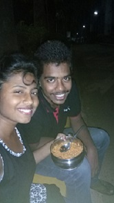

!DOCTYPE html>
lovepage-1Ebe kan lekhibi bhabu thele gadha,phone kariki gita gaiba lagila "tum dil ki dhadkan me rehte ho rehte ho",pura pagala jhia ta gadhi,to sangre ete moments bhala achi na kahile saribani still try karibi kichi moments again yad delibaku,those moments really mean a lot to me,i love to remind them sometimes.......
1st sem Computer lab,E.d lab,Chemistry lab
those moments have a spcl place in me as they gave me my best friend,still remember the first computer lab ,i switched on your system,jhia ra bhao tab baap re...,but se lab ete bhala thela ,adha programs ta to thu hi copy kari thebe sayad pura sem re,eita gote lab thela copy karu thele to eng.drawing wala gote jouthi tora pura drawing banau thele,na banao to muha baneiki thea hei jiba agre au nijar tedha medha banei lagiba phir mu dekhibi au help karibi,"darkar ni" tor common dialogue as always,au thare mane achi mu mari dei thele niku hatre to se kandiba lagila,first time kandi thela mo agre gadhi,chemistry lab v bohat bhala thela na jau thele basi ki katha share karu thele ek dusre bisaya re ,civil lab v jai sangre basu thela,ama ku close ani bari ye sabu labs bohat help karichi,i miss them all,ab to comp.lab v kebe kebe alga hei jae,but koi ni ab ete close asi jaichu ki dur jiba imposible,ab Niku ku bas chance darkar pakhre basibara,pakhre na basile v muha phulei bas theba.running race lageibaku pade maneibaku gadhi ku,har waqt siva darkar
only we know how much we prepared throughout the sem,adha class bunk ,au jaiki administration dept. side re basi jau thela phir ama padhai start ,and it used to last not more than 10 mins,phir amar masti,au at lst exam agru tnsn nei ki basu thela

a moment between 8:30pm to 10pm
dont you think ame nija bisaya re jaha v katha janichu most of them is becoz of these time throughout the sem,past,experience,life everything ,aji kali to mam thaki ki palauchnti but niku used to sit and didnt even use to permit to leave.maggi baneiki khilau thela mote ,and you know niki bhala maggi banae.